Contents
%%%%%%%%%%%%%%%%%%%%%%%%%%%%%%%%%%%%%%%%%%%%%%%%%%%%%%%%%%%%%%%%%%%%%%%%%%% % ASEN 3111 - CA2 % % Created By: Johnathan Tucker % % Collaborators: N/A % % The purpose of the script is to contain all of the constants and basic % computation that will be passed to the plot airfoil flow function as well % as the plot settings function % % Created Date: 2/23/2020 % % Change Log: % - 2/25/2020: Code up plot airfoil function % - 2/26/2020: Code up plot settings function % - 2/27/2020: Finalize formatting %%%%%%%%%%%%%%%%%%%%%%%%%%%%%%%%%%%%%%%%%%%%%%%%%%%%%%%%%%%%%%%%%%%%%%%%%%%
Housekeeping
clc; clear all; close all; tic
Create all necessary constants for the function
c = 2; % [m] alpha = 12*pi/180; % [rad] V_inf = 68; % [m/s] p_inf = 101.3e3; % [Pa] rho_inf = 1.225; % [kg/m^3] N = 100; % Iteration Number
Create plots for the first bullet point
[psi_plot,phi_plot,press_plot] = Plot_Airfoil_Flow(c,alpha,V_inf,p_inf,rho_inf,N); Plot_Settings(psi_plot,phi_plot,press_plot,0,0,0,1)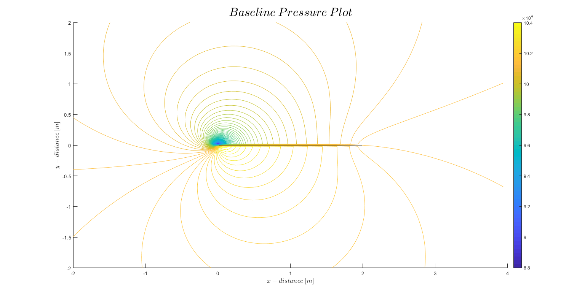
Perform Error analysis for the Second bullet point
The process for this section will be to use a large N, get the frobenius norm of the pressure matrix at this large N, and then use that value as a point of comparison for all other iteration values.
N = 10000; [psi_plot,phi_plot,press_plot] = Plot_Airfoil_Flow(c,alpha,V_inf,p_inf,rho_inf,N); % Get the "exact" frobenius norm value press_ax = press_plot.Children; dataObj = get(press_plot.Children,'children'); if iscell(dataObj) data_struct = dataObj{2}; pressure_mat = data_struct(2).ZData; else pressure_mat = dataObj(2).ZData; end frob_exact = norm(pressure_mat,'fro'); % Now iterate through N values calculating the frobenius norm and plot the % results % NOTE: This section takes a long time to run. The result of this loop was % saved into the 'error.mat' to save on runtime, and thus the grader's % time. % for N = 1:300 % [psi_plot,phi_plot,press_plot] = Plot_Airfoil_Flow(c,alpha,V_inf,p_inf,rho_inf,N); % % Get the "exact" frobenius norm value % press_ax = press_plot.Children; % dataObj = get(press_plot.Children,'children'); % data_struct = dataObj{2}; % pressure_mat = data_struct(2).ZData; % frob_compare = norm(pressure_mat,'fro'); % % error_vec(N) = abs(frob_exact - frob_compare)/frob_compare * 100; % end % Reset the N value because the iteration is commented out N = 300; % Load the error matrix load('error.mat') % Create the error plot figure(12) plot(1:1:N,error_vec) title('$Error\:In\:Pressure\:Vs\:Number\:of\:Iterations$','Interpreter','latex','FontSize',23) xlabel('$Number\:of\:Iterations$','Interpreter','latex') ylabel('$Pressure\:Error[Pa]$','Interpreter','latex') set(gcf, 'Position', get(0, 'Screensize'));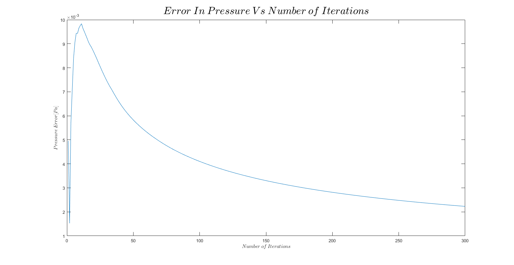
Create plots for the third bullet point
First iterate through different chord lengths
for c = 2:7 % Get the steam and potential plots [psi_plot, phi_plot, ~] = Plot_Airfoil_Flow(c,alpha,V_inf,p_inf,rho_inf,N); % Configure and display them Plot_Settings(psi_plot,phi_plot,press_plot,c,0,0,c) end % Next iterate through different angles of attack resetting the previously % changed variable to the baseline value c = 2; alpha_vec = [6,8,10,12,14,16]; for flag = 8:13 % Get the steam and potential plots [psi_plot, phi_plot,~] = Plot_Airfoil_Flow(c,alpha_vec(flag-7)*pi/180,V_inf,p_inf,rho_inf,N); % Configure and display them Plot_Settings(psi_plot,phi_plot,press_plot,0,alpha_vec(flag-7),0,flag) end % Finally iterate through different freestream velocities resetting the % previously changed variable to the baseline value alpha = 12*pi/180; V_inf_vec = [25, 50, 100, 150, 200, 250]; for flag = 14:19 % Get the steam and potential plots [psi_plot, phi_plot,~] = Plot_Airfoil_Flow(c,alpha,V_inf_vec(flag-13),p_inf,rho_inf,N); % Configure and display them Plot_Settings(psi_plot,phi_plot,press_plot,0,0,V_inf_vec(flag-13),flag) end toc
Elapsed time is 63.088390 seconds.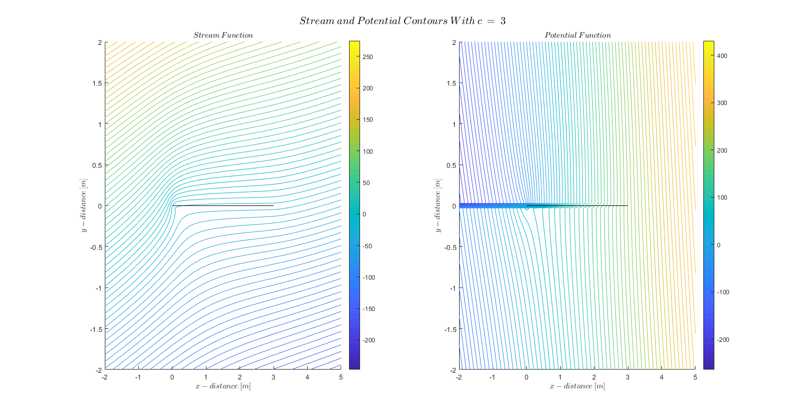 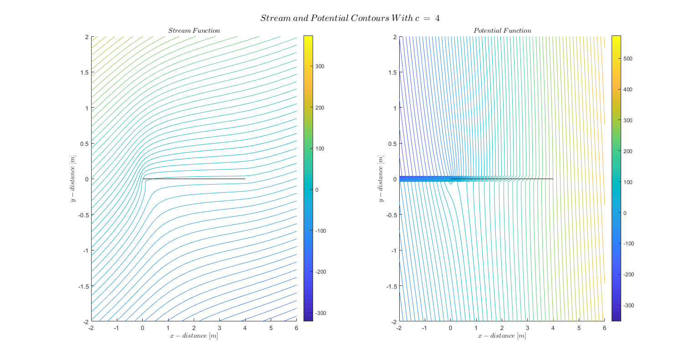 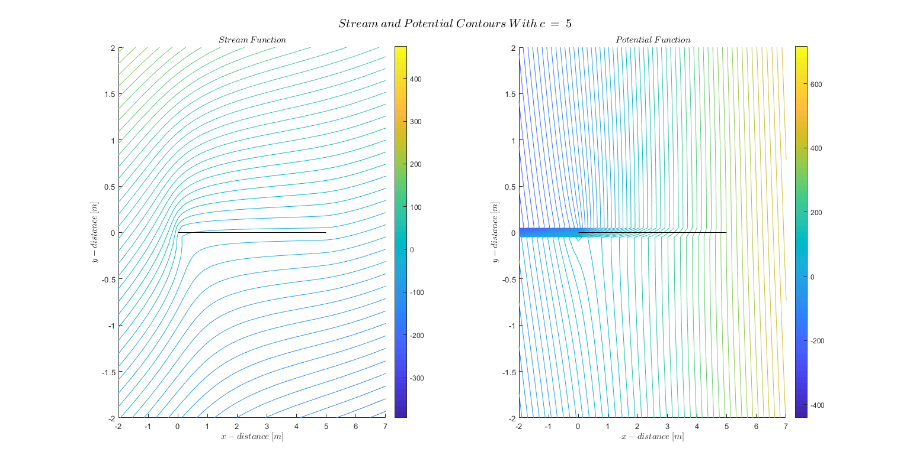 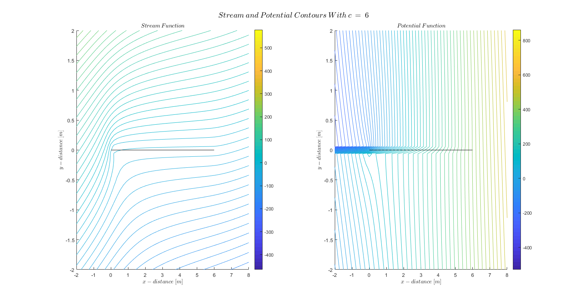 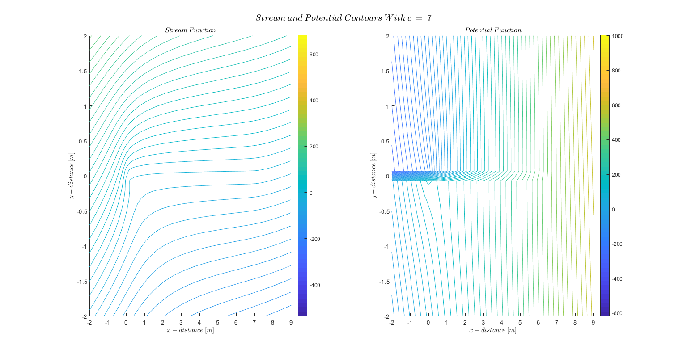 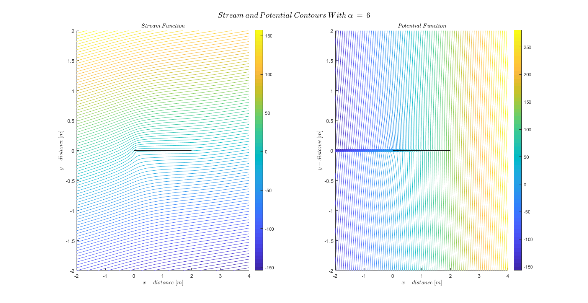 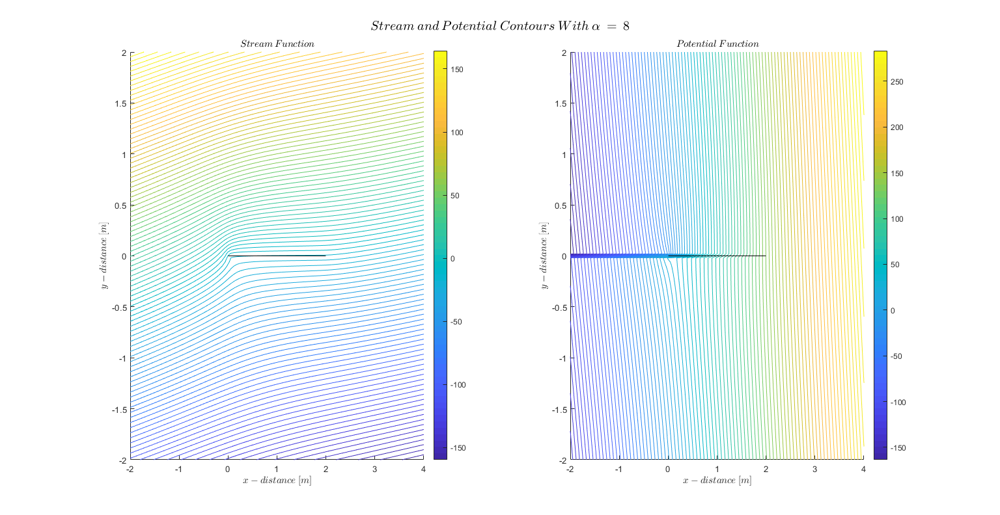 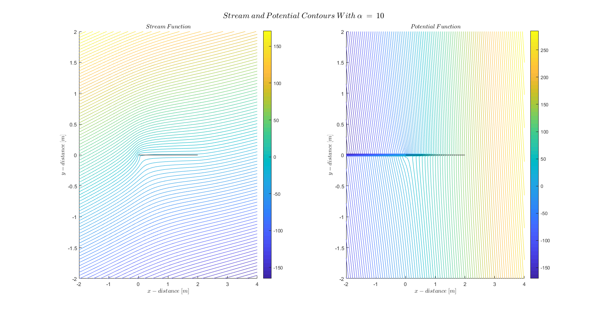 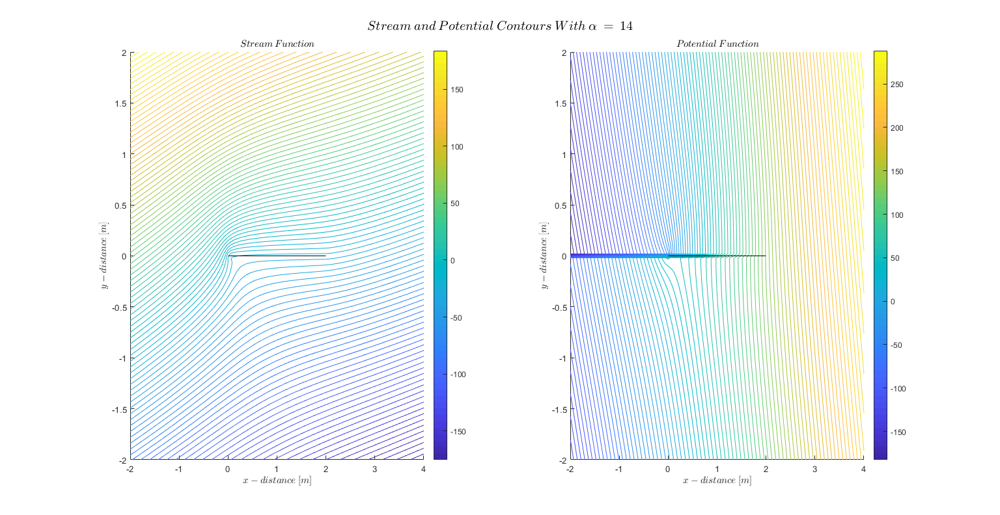 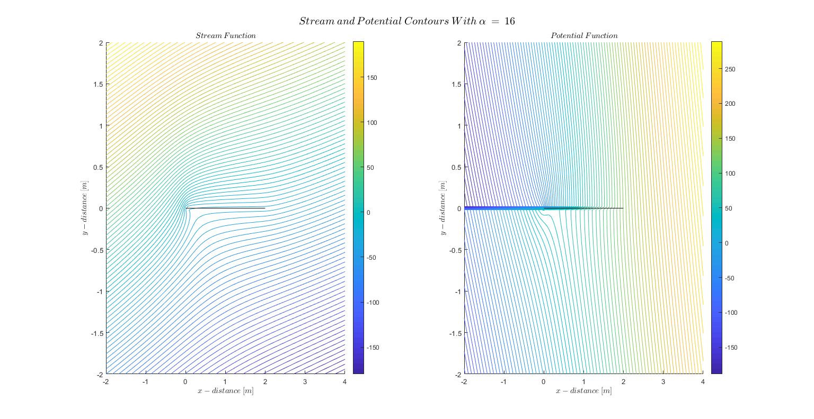 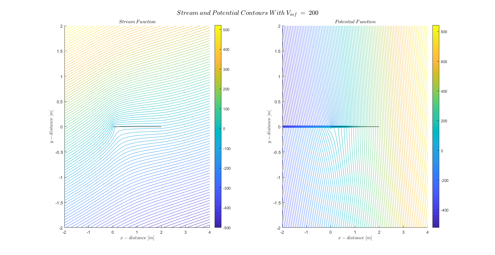